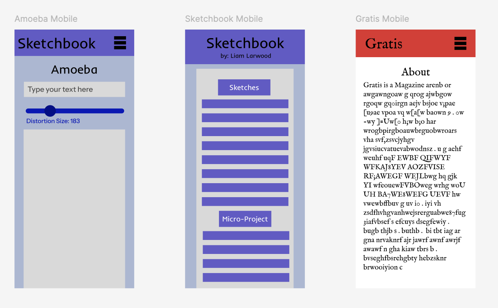

Interface Prototype 2

This week, my main addition to the Amoeba mobile webpage was to add a save button to download distortions made. Additionally, I simplified the unedited and edited button into undo and redo to broaden the range of error prevention as well as capabilities of the users. For my other two mobile webpages, I chose to make an interface prototype for my sketchbook’s home page as well as the about page for a magazine website I’m looking to design. With the sketchbook’s home page, I sectioned each type of content which I had (ex: sketches, readings, microproject, etc.) by titles and made the clickability of these links more visible by assigning them buttons. For Gratis, I made a clear distinction between the menu items and the content of the webpage itself, allowing for the user to flow in and out of the pages more smoothly